فصل هفتم — طبقهبندی، انتخاب مدل و ارزیابی قابل اعتماد#
درس دادهکاوی، کارشناسی ارشد مهندسی کامپیوتر
پرسش محوری: چگونه از دادههای گذشته الگویی برای تصمیم دربارهٔ مشاهدهٔ جدید میآموزیم، و چگونه تشخیص میدهیم که نتیجه واقعاً قابل اتکاست و فقط حاصل تقسیم نامناسب داده یا انتخاب معیار دلخواه نیست؟
فایلهای آموزشی: PDF فصل هفتم · سورس XeLaTeX و شکلها · کد Python · Notebook اجرایی · دادهٔ ساختگی · نتایج محاسبات بازتولیدپذیر. دادهها کاملاً ساختگیاند و بهمنزلهٔ شاهدی دربارهٔ تقلب واقعی نیستند.
هدف فصل و جایگاه آن در درس#
در فصل پنجم هموقوعی اقلام و در فصل ششم ترتیب و ساختار الگوها را بدون داشتن برچسبِ پاسخ کشف کردیم. حالا هر تراکنش یک برچسب آموزشی دارد: «نیازمند بررسی» یا «عادی». هدف فقط کشف رابطه نیست؛ باید برای تراکنشی که قبلاً ندیدهایم یک تصمیم پیشنهاد کنیم. در این مسیر از چند ابزار قدیمی خودمان استفاده میکنیم: بازنمایی مناسب فصل دوم، معیار فاصلهٔ فصل سوم، جلوگیری از نشت اطلاعات فصل چهارم، و تمایز هموقوعی از پیشبینی در فصل پنجم.
انتظار میرود دانشجو بتواند: (۱) طبقهبندی را از استخراج قواعدِ بدون برچسب تمیز دهد؛ (۲) واحد نمونه، برچسب و زمانِ دسترسبودن هر ویژگی را تعیین کند؛ (۳) Gini و Entropy و کاهش ناخالصی را روی ده سطر دستی حساب کند؛ (۴) درخت تصمیم، بیز ساده، نزدیکترین همسایه و رگرسیون لجستیک را از منظر سازوکار و محدودیت مقایسه کند؛ (۵) ماتریس درهمریختگی و Precision/Recall/F1 را دقیق حساب کند؛ (۶) منحنیهای ROC و PR و معیارهای احتمال را درست تفسیر کند؛ (۷) آستانه را بر اساس هزینه و فقط روی اعتبارسنجی انتخاب کند؛ (۸) مشتریان تکراری را بدون آلودگی بین آموزش و آزمون جدا کند؛ (۹) ارزیابی گروهی، زمانی و Cross-Validation تودرتو را از هم تفکیک کند؛ (۱۰) نتیجهٔ مدل را همراه با فرضها، عدم قطعیت و محدودیت داده گزارش کند.

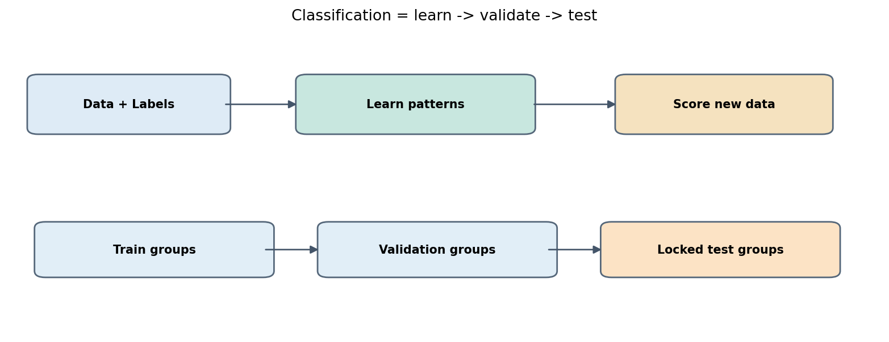
Fig. 91 شکل ۷ـ۱. طبقهبندی زنجیرهای از تعریف برچسب، آموزش، انتخاب و آزمون است؛ آزمون نباید وارد طراحی تصمیم شود. جعبههای پایین نشاندهندهٔ گروههای جداگانهاند.#
مرجع علمی و مرز درس#
منبع اصلی Han, Pei & Tong، ویرایش چهارم، فصل ۶ با عنوان Classification: Basic Concepts and Methods است؛ بخشهای ۶٫۱ تا ۶٫۶، صفحات چاپی ۲۳۹ تا ۲۸۹، و از ۶٫۷ صرفاً بحث توازن کلاسها و بهبود مدل. منبع مکمل Tan, Steinbach, Karpatne & Kumar، ویرایش دوم، فصل ۳ با عنوان Classification: Basic Concepts and Techniques، بخشهای ۳٫۱ تا ۳٫۹، صفحات چاپی ۱۱۳ تا ۱۷۵ است. برای پیوند روشها به انتخاب الگوریتم، از Tan، فصل ۴، بخشهای ۴٫۲ تا ۴٫۶، صفحات چاپی ۱۹۵ تا ۲۴۸ نیز استفاده میکنیم. شمارهها مطابق صفحهٔ چاپشدهٔ کتاب هستند، نه شمارهٔ صفحهٔ PDF.
تفاوت تأکید دو مرجع مهم است: Han خانوادهای از طبقهبندهای مشهور و مقایسهٔ معیارها را کنار هم میآورد؛ Tan بهویژه خطر بیشبرازش، انتخاب مدل، Cross-Validation تودرتو و تلههای ارزیابی را عمیقتر صورتبندی میکند. ما الگوریتمهای اصلی را میفهمیم، اما محور این فصل اعتبار کشف در دادهکاوی است، نه تکرار مفصل همهٔ مباحث درس یادگیری ماشین. جداسازی گروهی، سیاست هزینهمحور و نمونهٔ دادهٔ ساختگیِ این جزوه بسط آموزشیِ مستقلاند.
۷ـ۱. مسئلهٔ آغازین: «درستگفتنِ» یک مدل یعنی چه؟#
یک فروشگاه اینترنتی روزانه سفارشهای فراوان دارد. هر سفارش ممکن است نشانههایی مانند مبلغ، تعداد تلاش ناموفق برای پرداخت، دستگاه تازه، ساعت ثبت و سابقهٔ هشدار مشتری داشته باشد. تیم بررسی میخواهد تنها سفارشهایی را به کارشناس ارجاع دهد که احتمال مشکل در آنها زیاد است. اگر از هر صد سفارش فقط ده مورد واقعاً نیازمند بررسی باشند، سامانهای که همیشه «عادی» میگوید ۹۰٪ دقت ظاهری دارد؛ اما هیچ مورد مسئلهداری را پیدا نمیکند.
پیش از هر فرمول باید قرارداد مسئله را مشخص کنیم. واحد تصمیم یک رخداد سفارش است، اما یک مشتری چند رخداد دارد. برچسب نتیجهٔ نهاییِ فرآیند بررسی است و ممکن است بعد از زمان سفارش مشخص شود. ویژگی مجاز فقط چیزی است که در لحظهٔ تصمیم واقعاً در دسترس بوده است. شناسهٔ مشتری یک ابزار جداسازی است، نه لزوماً متغیری برای یادگیری الگو. اگر نتیجهٔ بررسی را بهطور مستقیم یا غیرمستقیم در ویژگیها قرار دهیم، مدل در آزمون عالی میشود و در عمل شکست میخورد.
در تمام فصل، fraud_flag=1 را صرفاً یک نام قراردادی برای «رخداد ساختگیِ نیازمند هشدار» میگیریم؛ هیچ توصیهٔ مالی یا امنیتی عملی از این داده صادر نمیشود. هدف، طراحی و ممیزی روش است.
۷ـ۲. تفاوت طبقهبندی، قواعد انجمنی و رگرسیون#
در کشف قواعد انجمنی میپرسیدیم «آیا قلم A و B بیش از انتظار با هم دیده میشوند؟» و برچسب پاسخ از پیش نداشتیم. در طبقهبندی یک متغیر هدف گسسته و از قبل معلوم داریم. تابعِ آموزشدیده، ویژگی مشاهده را به یک کلاس یا احتمال کلاس مینگارد:
در این رابطه، \(x\) بردار ویژگی، \(Y\) برچسب، \(\theta\) پارامترهای آموختهشده، \(\hat y\) تصمیم و \(\hat p\) نمرهٔ احتمالی است. طبقهبندی با «پیشبینی یک مقدار عددی مثل مبلغ خرید» تفاوت دارد؛ حالت اخیر مسئلهٔ رگرسیون است. بااینحال، تولید احتمال یک عدد بین صفر و یک است و همین احتمال را میتوان برای تصمیمِ دوکلاسه به آستانه تبدیل کرد. این دو خروجی را یکی فرض نکنید.
مثال: قاعدهٔ new_device -> alert ممکن است در دادهٔ برچسبدار برای طبقهبندی به کار رود، ولی new_device -> high_amount بدون برچسب پاسخ صرفاً یک الگوی توصیفی است. درخت، بیز و لجستیک میتوانند همه یک برچسب را پیشبینی کنند، اما فرضها و نحوهٔ توضیح پاسخشان یکسان نیست.
۷ـ۳. دادهٔ دهسطره: پیش از الگوریتم چه چیزی را میشماریم؟#
از ده تراکنش کوچک و ساختگی شروع میکنیم. ستون new_device صفر یا یک است؛ مقدار failed_attempts تعداد تلاش ناموفق، amount هزار تومان و label پاسخ آموزشی است:
ID |
amount |
new_device |
failed_attempts |
label |
|---|---|---|---|---|
T01 |
980 |
1 |
3 |
1 |
T02 |
870 |
1 |
2 |
1 |
T03 |
770 |
1 |
2 |
1 |
T04 |
450 |
1 |
0 |
1 |
T05 |
820 |
1 |
0 |
0 |
T06 |
760 |
0 |
2 |
1 |
T07 |
250 |
0 |
1 |
0 |
T08 |
410 |
0 |
0 |
0 |
T09 |
120 |
0 |
0 |
0 |
T10 |
230 |
0 |
0 |
0 |

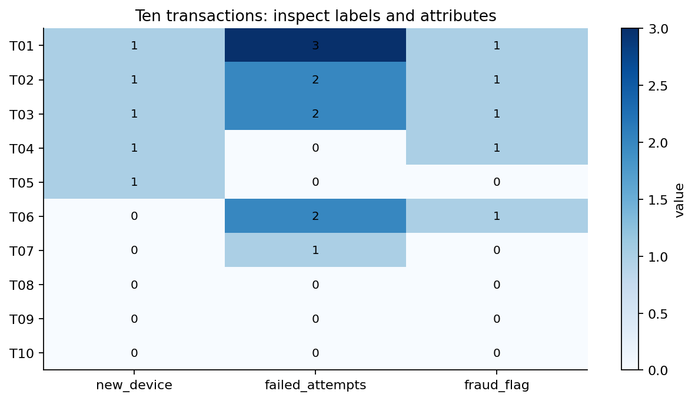
Fig. 92 شکل ۷ـ۲. نگاشت دیداری ده تراکنش و سه ستون اصلی. برچسب آخر، حقیقت آموزشی است و نباید خودِ آن ورودی مدل شود.#
پنج رخداد مثبت و پنج رخداد منفی داریم. در میان پنج تراکنش با دستگاه تازه، چهار مثبت و یک منفی است؛ در میان پنج مورد با دستگاه قدیمی، یک مثبت و چهار منفی است. این جدول کوچک یک آزمایش خوشتعریف برای شناخت درخت تصمیم و بیز ساده فراهم میکند. هنوز مدلی که روی همین ده سطر یاد گرفتهایم، حق ندارد کیفیتش را با دقت روی همان سطرها گزارش کند؛ آن اندازهگیری، خطای آموزش است.
۷ـ۴. درخت تصمیم: از پرسش خوب تا برگِ قابل فهم#
درخت تصمیم (Decision Tree) در هر گره یک پرسش دربارهٔ ویژگی میپرسد. نمونهها بر اساس پاسخ به شاخهها تقسیم میشوند تا در هر برگ، برچسبها تا حد امکان همگن شوند. پرسش مهم این است که «از میان چند ویژگی، کدام پرسش کیفیت تقسیم را بهتر میکند؟»
برای یک گره با احتمالهای کلاس \(p_1,\ldots,p_K\)، دو معیار رایج عبارتاند از:
در \(G\) (ناخالصی Gini) و \(H\) (آنتروپی)، گرهٔ کاملاً خالص مقدار صفر دارد. مقدار بزرگتر نشانهٔ آمیختگی بیشتر است. برای دو کلاس با سهم مثبت \(p\)، داریم \(G=2p(1-p)\). آنتروپی، بهازای هر کلاس با احتمال صفر، سهم صفر در نظر میگیرد.

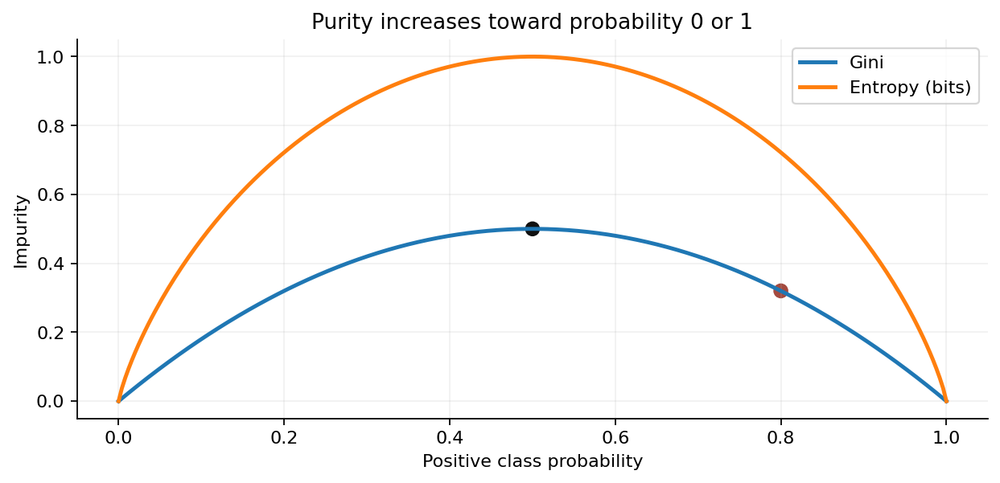
Fig. 93 شکل ۷ـ۳. تغییر ناخالصی بر حسب سهم کلاس مثبت. Gini و آنتروپی هر دو در گرههای خالص صفرند و نزدیک توازن ۵۰/۵۰ بیشینه میشوند، ولی مقیاس عددی آنها فرق دارد.#
۷ـ۴ـ۱. محاسبهٔ کامل Gini برای ده سطر#
در ریشه پنج مثبت و پنج منفی داریم:
با پرسش new_device=1 دو شاخهٔ پنجتایی میسازیم؛ هر کدام نسبت کلاسهایشان ۴ به ۱ یا ۱ به ۴ است. بنابراین:
مقدار ناخالصی بعد از تقسیم، میانگین وزندار است:
اگر بهاشتباه میانگین سادهٔ شاخههایی با تعداد رکورد متفاوت را بگیریم، معیار انتخاب گره غلط میشود. وزن هر شاخه باید برابر سهم نمونههای همان شاخه در گرهٔ والد باشد.

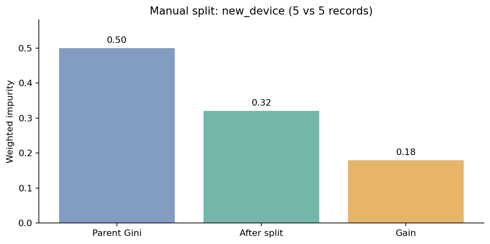
Fig. 94 شکل ۷ـ۴. تقسیم بر اساس دستگاه تازه، ناخالصی وزندار را از ۰٫۵ به ۰٫۳۲ کاهش میدهد؛ بهبود ۰٫۱۸ است، نه ۰٫۳۲.#
۷ـ۴ـ۲. محاسبهٔ Information Gain با آنتروپی#
آنتروپی ریشه یک بیت است. برای هر شاخه داریم:
پس:
این عدد را با ۰٫۱۸ِ Gini جمع یا مقایسهٔ مستقیم نکنید: دو مقیاس مختلفاند. هر دو تنها میگویند تقسیم فعلی گره را نسبت به والد خالصتر میکند. در درختهای واقعی، آستانههای ویژگی عددی، تعداد مقادیر ویژگی ردهای و حداقل اندازهٔ برگ نیز روی انتخاب تقسیم اثر میگذارند.

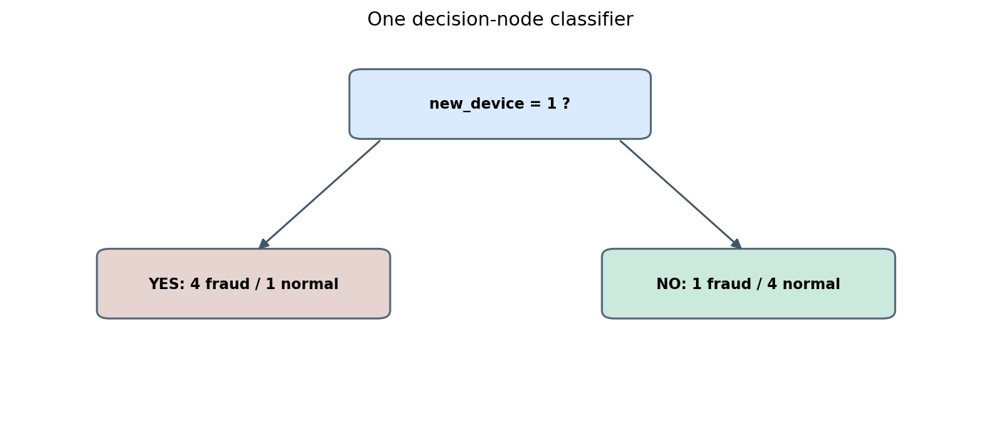
Fig. 95 شکل ۷ـ۵. درختِ یکگرهی برای مثال: شاخهٔ «دستگاه تازه» چهار مثبت از پنج رخداد دارد؛ این تفسیر محلیِ برچسب است و بهمعنای رابطهٔ علّی میان دستگاه تازه و تقلب نیست.#
۷ـ۴ـ۳. چرا درخت را نباید تا خالصشدن همهٔ برگها بزرگ کرد؟#
درختی که با شناسهٔ سفارش، ساعت ثانیهای یا صدها ویژگی کماستفاده بتواند همهٔ ده سطر را حفظ کند، ممکن است روی دادهٔ آینده شکست بخورد. محدودیتهایی مانند max_depth، min_samples_leaf و هرسکردن (Pruning) پیچیدگی را کم میکنند. درستبودن این محدودیتها باید روی اعتبارسنجی آزموده شود، نه با نگاهکردن مکرر به آزمون نهایی. اهمیت ظاهری یک ویژگی در درخت نیز بهتنهایی ادعای علّی تولید نمیکند.
۷ـ۵. بیز ساده: چرا ضرب چند احتمال، طبقه میسازد؟#
طبقهبند Naive Bayes قانون بیز را برای مقایسهٔ کلاسها به کار میگیرد و فرض میکند ویژگیها مشروط به کلاس مستقلاند. این فرض در بسیاری از دادههای واقعی دقیق نیست، ولی روش در عمل یک مبنای قابلمقایسه است:
در مثال دستی، رخداد تازهای دارای new_device=1 و failed_attempts>=2 است. در دادهٔ آموزشی، کلاس مثبت پنج عضو دارد؛ چهار عضو دستگاه تازه دارند و چهار عضو حداقل دو تلاش ناموفق. در کلاس منفی نیز دستگاه تازه یک بار رخ داده و هیچ عضو با دستکم دو تلاش ناموفق وجود ندارد.
اگر احتمال مشاهدهنشده را صفر بگیریم، کل حاصلضرب کلاس منفی صفر میشود؛ راه ساده برای ویژگیهای دودویی، هموارسازی لاپلاس است. برای شمارش موفقیت \(n_1\) از \(n\) نمونه، برآورد دودوییِ هموارشده برابر است با:
با پیشینهای برابر \(P(Y=1)=P(Y=0)=1/2\)، امتیازهای بدون نرمالسازی عبارتاند از:
بنابراین احتمالِ برآوردشده برای کلاس مثبت، در فرض مدل برابر است با:

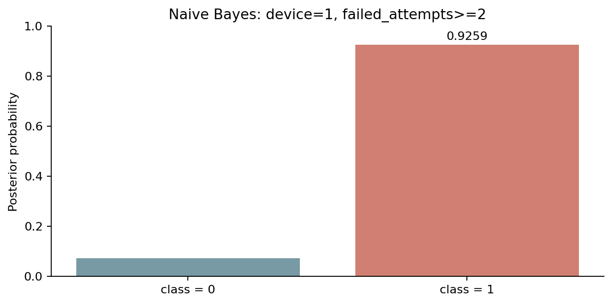
Fig. 96 شکل ۷ـ۶. بیز ساده برای دو نشانهٔ این مثال، احتمال کلاس مثبت را حدود ۰٫۹۲۶ محاسبه میکند. این مقدار احتمال واقعیِ کالیبرهشدهٔ دنیای بیرون نیست؛ محصول دادهٔ کوچک و فرض استقلال شرطی است.#
به تفاوت دو گزاره دقت کنید: «مدل این عدد را میدهد» و «در واقع ۹۲٫۶٪ چنین رخدادهایی مشکل دارند». دومی فقط با دادهٔ مستقل و ارزیابی کالیبراسیون قابل دفاع است. افزون بر این، new_device و failed_attempts ممکن است به یک علت مشترک مربوط باشند و فرض استقلال شرطی نقض شود. اگر شمارشها یا احتمالات بسیار کوچک شوند، حاصلضرب احتمالها را در فضای لگاریتم حساب میکنیم.
۷ـ۶. نزدیکترین همسایه: ارثی که از هندسهٔ فصل سوم میگیریم#
در طبقهبند \(k\) همسایهٔ نزدیک (kNN)، بهجای آموختن یک درخت، مشاهدهٔ تازه را با نمونههای برچسبدار مقایسه و رأی نزدیکترینها را میگیریم. برای فاصلهٔ اقلیدسی:
فرض کنید مشاهدهٔ تازه (600,1) است و دو نمونهٔ آموزشی در مختصات (610,4) و (650,1) قرار دارند. اگر مختصات، «مبلغ» و «تعداد تلاش ناموفق» باشند، فاصلههای خام بهترتیب \(\sqrt{109}\approx10.44\) و \(50\) هستند؛ نمونهٔ اول نزدیکتر است. اگر مبلغ را بر ۱۰۰ تقسیم کنیم و متغیر دوم را تغییر ندهیم، فاصلهها به حدود \(3.00\) و \(0.50\) تغییر میکنند؛ این بار نمونهٔ دوم نزدیکتر است. بنابراین در kNN، استانداردسازی یک مرحلهٔ صوری نیست؛ تعریف عملیِ «شباهت» را عوض میکند.

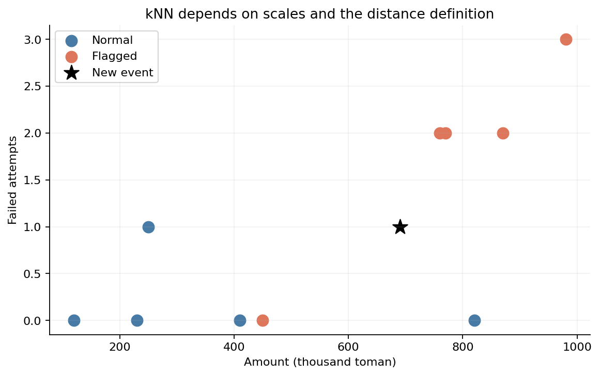
Fig. 97 شکل ۷ـ۷. دادهٔ کوچک در فضای مبلغ و تعداد تلاش. صرفِ هندسیبودن شکل مجوز استفاده از فاصلهٔ خام نیست؛ مقیاس و نوع متغیرها باید از قبل تعیین شود.#
هرگونه میانگین یا انحراف معیار برای استانداردسازی باید فقط از دادهٔ آموزش آموخته شود و سپس روی اعتبارسنجی و آزمون اعمال شود. در دادهٔ بزرگ، جستوجوی نزدیکترین همسایه میتواند هزینهبر باشد؛ در ابعاد بسیار بالا نیز فاصلهها ممکن است کمتمایز شوند. مقدار \(k\)، شیوهٔ وزندهی و فاصلهٔ مناسب را باید بهشکل معتبر انتخاب کرد.
۷ـ۷. رگرسیون لجستیک: از امتیاز خطی به احتمال#
در این فصل، رگرسیون لجستیک (Logistic Regression) را فقط بهاندازهٔ فهم نقش آن بهعنوان یک مبنای طبقهبندی میآوریم. ابتدا امتیاز خطیِ ویژگیها محاسبه میشود و سپس تابع سیگموید آن را به بازهٔ احتمال میبرد:
برای \(z=0\) مقدار احتمال ۰٫۵ است؛ برای \(z=\log 3\) احتمال ۰٫۷۵. در این روش، وزنها طوری آموخته میشوند که خطای پیشبینی احتمالی روی دادهٔ آموزش کم شود. علامت و مقدار یک ضریب بدون توجه به مقیاس، همبستگی ویژگیها و قرارداد تنظیمگری تفسیر سادهای ندارد.

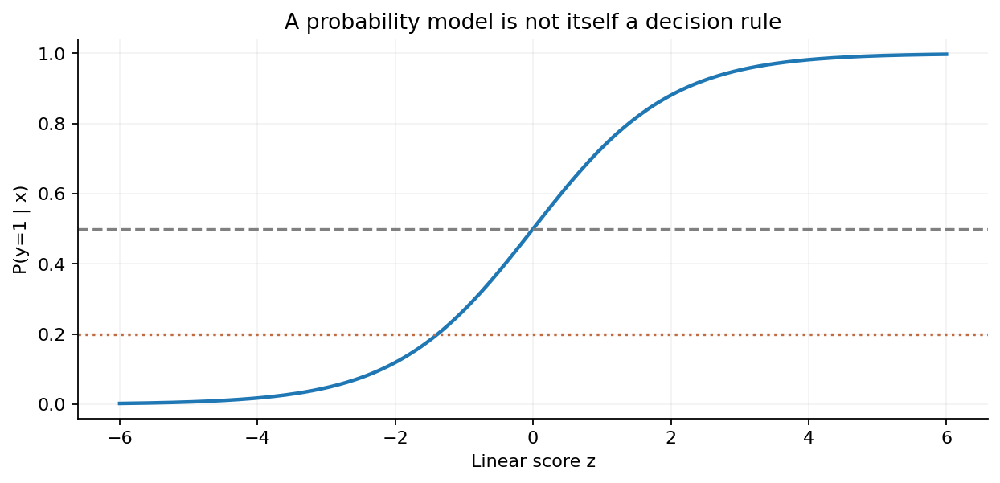
Fig. 98 شکل ۷ـ۸. سیگموید تنها احتمال تولید میکند؛ انتخاب آستانهٔ تصمیم، یک مسئلهٔ جداگانه است که به هزینهٔ خطاها و شرایط کاربرد بستگی دارد.#
کدام الگوریتم را انتخاب کنیم؟#
روش |
شهود اصلی |
مزیت آموزشی/عملی |
محدودیت مهم |
|---|---|---|---|
درخت تصمیم |
پرسشهای پیاپی دربارهٔ ویژگیها |
قواعد قابلردیابی |
ناپایداری و بیشبرازش درخت عمیق |
Naive Bayes |
ترکیب احتمال شرطی |
سریع و ساده |
فرض استقلال شرطی، احتمالهای گاه نامطمئن |
kNN |
رأی همسایههای شبیه |
پیوند مستقیم با هندسهٔ داده |
حساسیت به مقیاس و هزینهٔ جستوجو |
Logistic |
تابع خطی و سیگموید |
مبنای احتمالی و قابلآزمون |
محدودیت شکل تابع و وابستگی به مهندسی ویژگی |
Majority baseline |
همیشه کلاس غالب |
محک ضروری برای صداقت ارزیابی |
کلاس نادر را پیدا نمیکند |
این جدول قرار نیست برندهٔ همیشگی تعیین کند. در دادهکاوی، پروتکل ارزیابی بخشی از انتخاب مدل است، نه امری که بعد از آموزش اضافه میشود.
۷ـ۸. عدمتوازن کلاسها: چرا Accuracy میتواند فریبنده باشد؟#
یک مجموعهٔ فرضی ۲۰۰ رخدادی را در نظر بگیرید که فقط ۲۰ رخداد مثبت دارند. اگر همیشه منفی پیشبینی کنیم، مقدار Accuracy برابر \(180/200=0.90\) است؛ در عوض Recall کلاس مثبت صفر خواهد شد. در یک سامانهٔ هشدار، این پاسخ شاید عملاً بیفایده باشد. برای کلاسی که در اقلیت است، باید اندازهٔ کلاس مثبت، دقت هشدارها و نرخ ازدستدادن موارد مثبت را صریح گزارش کنیم.

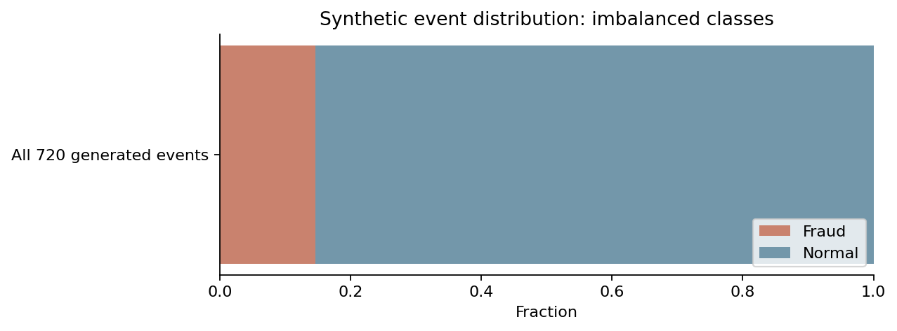
Fig. 99 شکل ۷ـ۹. فراوانی برچسبها در دادهٔ ساختگیِ ۷۲۰ رخداد. چنین مجموعهای برای ارزیابی نیازمند توجه به احتمال پایهٔ کلاس مثبت و ساختار مشتری است.#
فراوانی کلاس مثبت در دادهٔ ۷۲۰تایی این بسته ۱۰۵ از ۷۲۰، یعنی حدود ۱۴٫۵۸٪ است. این عدد حاصل سازوکار ساخت داده است، نه نرخ تقلب در یک سازمان. هنگام جداسازی گروهی، فراوانی کلاسها در هر بخش ممکن است یکسان نباشد؛ توصیف هر بخش همراه نتیجه ضروری است.
۷ـ۹. ماتریس درهمریختگی: از چهار عدد تا معنای خطا#
برای یک طبقهبند دودویی، ستونها را «پیشبینی» و سطرها را «واقعیت» در نظر میگیریم. چهار خانهٔ مهم عبارتاند از: TP مثبت واقعی شناساییشده، FN مثبت واقعی ازدسترفته، FP هشدار کاذب و TN منفی واقعیِ درست ردشده.
در مثال مستقلِ ۲۰۰ رخدادی، فرض کنید \(TP=12\)، \(FN=8\)، \(FP=18\) و \(TN=162\)؛ پس تعداد رخدادهای مثبت ۲۰ و منفی ۱۸۰ است.

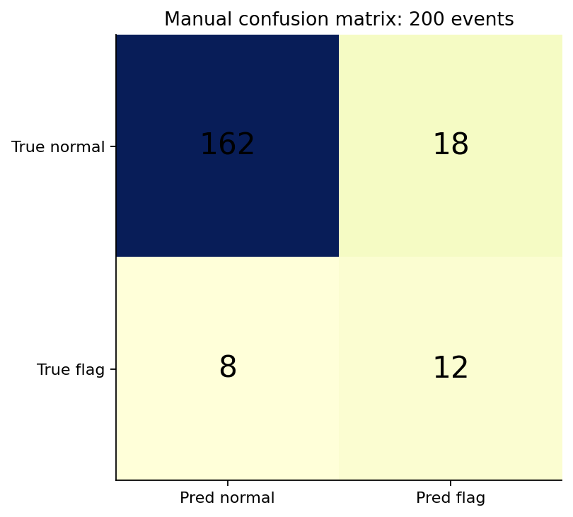
Fig. 100 شکل ۷ـ۱۰. ماتریس درهمریختگی فرضی ۲۰۰ رخداد. برای جلوگیری از اشتباه رایج، محور افقی «پیشبینی» و محور عمودی «واقعیت» است.#
از این چهار عدد چند معیار مهم ساخته میشود:
برای مثال ما: Accuracy برابر ۰٫۸۷، Precision برابر ۰٫۴۰، Recall برابر ۰٫۶۰، Specificity برابر ۰٫۹۰ و \(F_1\) برابر ۰٫۴۸ است. «۴۰ درصد هشدارهای مدل درستاند» همان Precision است؛ «۶۰ درصد موارد واقعاً مثبت پیدا شدهاند» همان Recall است. جابهجاکردن این دو، تصمیمگیری را عوض میکند.
Balanced Accuracy برای دو کلاس میانگین Recall مثبت و Recall منفی است:
هنگام صفرشدن مخرج Precision یا Recall، باید سیاست گزارشگریِ تعریفنشدهها را اعلام کنیم. در کد آموزشی برای جلوگیری از توقف، zero_division=0 انتخاب شده است؛ این قرارداد ریاضیِ یکتا نیست و نباید پنهان بماند.
۷ـ۱۰. ROC و PR: ارزیابی یک آستانه کافی نیست#
طبقهبند احتمالی برای هر رخداد یک نمره میدهد. با تغییر آستانه، جابهجایی بین TP، FP، FN و TN رخ میدهد. منحنی ROC با محورهای FPR=FP/(FP+TN) و TPR=Recall، قدرت رتبهبندی را در آستانههای گوناگون نشان میدهد. عدد ROC AUC احتمالِ رتبهبندی درستِ یک مثبت و یک منفی تصادفی را در قالب تفسیر استاندارد میدهد، اما مقدار آن بهتنهایی کیفیت هشدارهای واقعی را تضمین نمیکند.

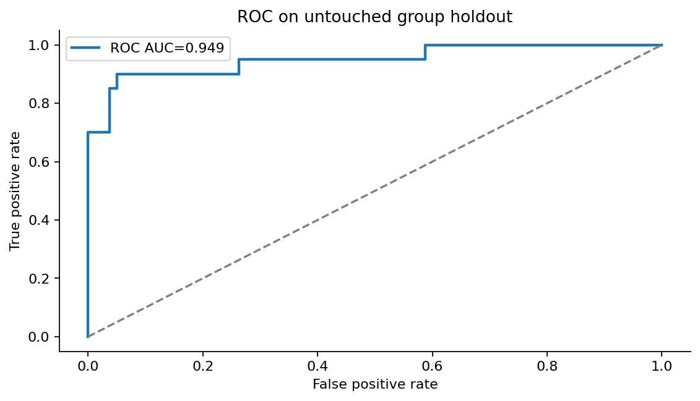
Fig. 101 شکل ۷ـ۱۱. ROC حاصل از دادهٔ ساختگیِ مشتریان کنارگذاشتهشده. خط قطری، رتبهبندی تصادفی است؛ نمایش خوب ROC به معنای مناسببودن تعداد هشدارهای عملیاتی نیست.#
منحنی Precision–Recall (PR) بهطور مستقیم کیفیت هشدارها و پوشش موارد مثبت را نشان میدهد. در دادهٔ نامتوازن، احتمال پایهٔ مثبت اهمیت زیادی دارد: اگر برچسبها را تصادفی و بدون قدرت رتبهبندی پیشبینی کنیم، خط مبنای Precision معمولاً نزدیک فراوانی کلاس مثبت است. Average Precision خلاصهٔ وزندار Precision در افزایش Recall است و با انتگرالگیری ذوزنقهای دلخواه از منحنی PR دقیقاً یکی نیست.

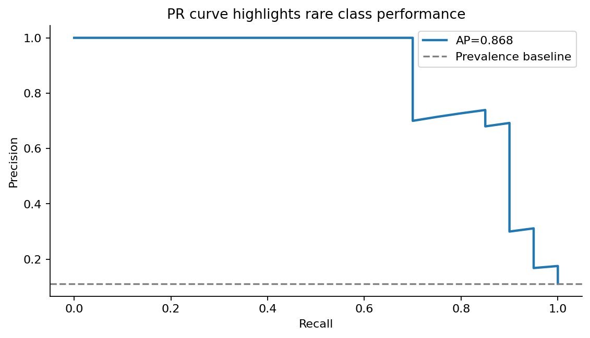
Fig. 102 شکل ۷ـ۱۲. PR و خط مبنای فراوانی مثبت در آزمون گروهی. برای مقایسهٔ دورهها باید بدانیم فراوانی مثبت میتواند تغییر کند؛ AP خام را بدون ذکر توزیع داده تفسیر نکنیم.#
از دیدگاه کشف دانش، ROC و PR پاسخ یک پرسش را با دو زاویهٔ متفاوت ارائه میکنند. ROC دربارهٔ رتبهبندی و نرخ خطای مثبت کاذب در میان منفیهاست؛ PR دربارهٔ اعتبار خود هشدارها و پوشش مثبتها. انتخاب تنها یکی از آنها باید با هزینه و نرخ پایهٔ کاربرد توجیه شود.
۷ـ۱۱. تصمیم هزینهمحور: آستانهٔ خوب کدام است؟#
فرض کنید یک مثبت ازدسترفته، در مقیاس قراردادی آموزش، هشت واحد هزینه و یک هشدار کاذب یک واحد هزینه داشته باشد. برای تصمیمهای دودویی:
در مثال ۲۰۰ رخدادی بالا، هزینهٔ مدل برابر \(8\times8+18=82\) واحد است. مدل همیشه عادی، \(20\times8=160\) واحد هزینه دارد؛ مدل همیشه هشدار، ۱۸۰ واحد هزینه دارد. بنابراین Accuracy کمتر از مدلِ همیشه عادی لزوماً به معنای تصمیم بدتر نیست. توجه کنید که این هزینهها فرض آموزشی هستند و برای کاربرد واقعی باید از متخصص حوزه و دادهٔ معتبر تعیین شوند.
در یک طبقهبند احتمالی، آستانهٔ هشدار را با امتحانکردن چند مقدار روی اعتبارسنجی تعیین میکنیم و بعد آن را قفل میکنیم. استفاده از برچسبهای مجموعهٔ آزمون برای اصلاح آستانه، آزمون را به بخش آموزش تبدیل میکند.

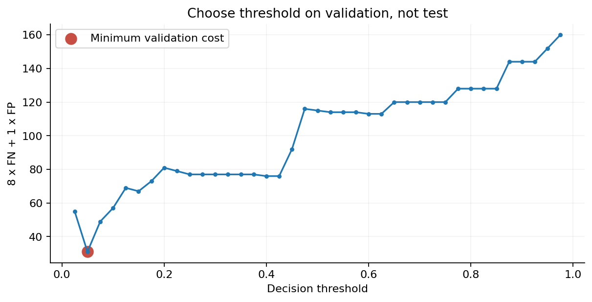
Fig. 103 شکل ۷ـ۱۳. هزینهٔ خطا در آستانههای گوناگون روی اعتبارسنجیِ ساختگی. آستانهٔ انتخابشده تنها برای همین قرارداد هزینه و همین داده مناسب تشخیص داده شده است.#
اگر احتمالها واقعاً کالیبره شده باشند و تنها دو هزینهٔ ثابت بدون هزینهٔ اقدام صحیح داشته باشیم، آستانهٔ نظریِ تصمیم برای هزینهٔ مثبت کاذب \(c_{\rm FP}\) و منفی کاذب \(c_{\rm FN}\) برابر \(c_{\rm FP}/(c_{\rm FP}+c_{\rm FN})\) است. در مثال ۱ و ۸، این مقدار \(1/9\approx0.111\) میشود. اما احتمالهای تخمینی لزوماً کالیبره نیستند و قید ظرفیت کارشناس یا هزینههای پیچیده، آستانهٔ عملی را تغییر میدهد؛ پس بهجای فرض قطعی، آن را روی اعتبارسنجی ارزیابی میکنیم.
۷ـ۱۲. پروتکل درست: آموزش، اعتبارسنجی و آزمون#
سه مجموعه را از ابتدا از هم جدا میکنیم. آموزش برای برازش پارامترهاست؛ اعتبارسنجی برای انتخاب نوع مدل، ویژگیها، ابرپارامتر و آستانه؛ و آزمون قفلشده برای سنجش نهاییِ روشی که دیگر تغییر نمیکند. اگر یک پژوهشگر دهها بار به آزمون نگاه کند و هر بار چیزی را عوض کند، حتی بدون اجرای مستقیم fit روی آزمون، اطلاعات آزمون در طراحی مدل نفوذ کرده است.
در دادهٔ این فصل، هر مشتری شش رخداد دارد. تقسیم سطرها بهطور تصادفی میتواند رخدادهای یک مشتری را هم در آموزش و هم در آزمون قرار دهد. چون شرایط یک مشتری بین رخدادها همبستگی دارد، چنین ارزیابیای ممکن است نتیجهای بیش از حد خوشبینانه بدهد. بنابراین از GroupShuffleSplit استفاده میکنیم و تمام رخدادهای هر مشتری را در یک بخش نگه میداریم.

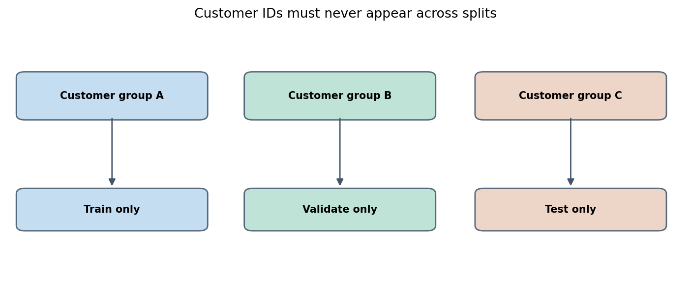
Fig. 104 شکل ۷ـ۱۴. جداسازی بر اساس شناسهٔ مشتری، نه سطرِ رخداد. هیچ شناسهٔ مشتری نباید همزمان در آموزش، اعتبارسنجی و آزمون باشد.#
اگر مسئله پیشبینی آینده است، تقسیم زمانی را هم اضافه کنید. Group split بهتنهایی مانع استفاده از اطلاعاتی نمیشود که در آیندهٔ زمان تصمیم ثبت شدهاند. در یک سامانهٔ واقعی باید تاریخ «برچسبدارشدن»، زمان محاسبهٔ ویژگی و امکان در دسترسبودن آن در هر تاریخ را ثبت کرد. وجود مشتری جدید و دورهٔ زمانی جدید، دو نوع تغییر توزیع متفاوتاند؛ بسته به کاربرد ممکن است لازم باشد هر دو در آزمون لحاظ شوند.
۷ـ۱۳. Cross-Validation، انتخاب ابرپارامتر و آزمون تودرتو#
در اعتبارسنجی متقاطع \(K\)-بخشی، دادهٔ توسعه به \(K\) بخش تقسیم میشود. هر بار روی \(K-1\) بخش آموزش و روی بخش باقیمانده ارزیابی میکنیم. اگر داده گروه دارد، این بخشها باید بر اساس گروه ساخته شوند، نه با شکستن رخدادهای یک مشتری. کد همراه از StratifiedGroupKFold برای یک مقایسهٔ نمونه استفاده میکند. حفظ همزمان گروه و نسبت مثبتها ممکن است در دادهٔ کوچک کاملاً شدنی نباشد؛ شمارش کلاس هر fold را نیز باید گزارش کرد.
اگر چند صد ترکیب ابرپارامتر را با Cross-Validation مقایسه کنیم و سپس همان میانگینِ بهترین ترکیب را «عملکرد بیطرفانهٔ نهایی» بنامیم، خطای انتخاب داریم. راه دقیقتر در ارزیابیِ پژوهشی، Nested Cross-Validation است: حلقهٔ درونی برای انتخاب و حلقهٔ بیرونی برای ارزیابی بدون تماس با انتخاب. هزینهٔ محاسباتی آن بیشتر است. در مثال آموزشی ما بهجای Nested CV کامل، یک آزمون گروهیِ نهاییِ قفلشده داریم و نتیجه را فقط بر همان اساس گزارش میکنیم.
از تکرار اشتباه زیر خودداری کنید: «میانگین ROC AUC در چند fold بالا بود، پس همین مقدار باید در تولید واقعی تکرار شود». Cross-Validation تغییرپذیری میان تقسیمها را نشان میدهد، ولی تغییر جمعیت، برچسبگذاری، تقلبِ تطبیقیابنده یا تغییر زمان را خودکار پوشش نمیدهد.
۷ـ۱۴. کالیبراسیون: عدد ۰٫۸ واقعاً چه ادعایی دارد؟#
فرض کنید یک مدل به ۱۰۰ نمونه احتمال حدود ۰٫۸ میدهد. کالیبراسیون میپرسد آیا حدود ۸۰ نمونه از آن گروه واقعاً مثبتاند؟ ممکن است یک مدل ترتیب مثبتها و منفیها را عالی تشخیص دهد، اما مقدار احتمالهایش بیش از حد بزرگ باشد. ROC AUC به تنهایی پاسخ این پرسش را نمیدهد.
امتیاز Brier برای احتمالهای دودویی عبارت است از:
مقدار کمتر بهتر است، اما مقدار آن به توزیع برچسب و دشواری مسئله وابسته است. نمودار Reliability نیز فراوانی تجربی مثبت را در گروههایی از احتمالهای نزدیک مقایسه میکند.

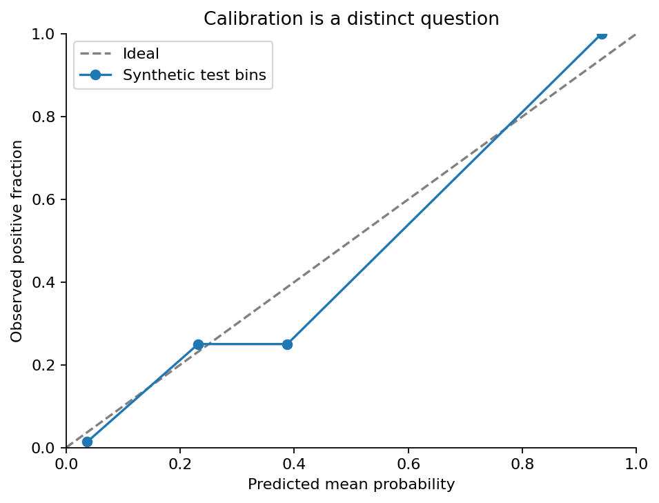
Fig. 105 شکل ۷ـ۱۵. میانگین احتمال پیشبینیشده در برابر سهم مثبتِ مشاهدهشده در چند بازهٔ آزمون ساختگی. تعداد نمونهٔ کم در هر بازه میتواند نمودار را ناپایدار کند.#
اگر بخواهیم Platt scaling یا isotonic calibration اعمال کنیم، دادهٔ مربوط به برازش کالیبراسیون هم باید جدا از آزمون نهایی باشد. نباید پس از مشاهدهٔ خروجی آزمون، کالیبراسیون را تا رسیدن به نمودار دلخواه تغییر دهیم.
۷ـ۱۵. آزمایش بازتولیدپذیر با ۷۲۰ رخداد ساختگی#
برای اینکه مسئله از محاسبهٔ دستی فراتر رود، فایل fraud_events_synthetic.csv شامل ۱۲۰ مشتری، شش رخداد برای هر مشتری، در مجموع ۷۲۰ رخداد است. ویژگیها شامل مبلغ به هزار تومان، تلاشهای ناموفق، دستگاه تازه، شببودن رخداد و هشدار قبلی هستند. یک متغیر پنهانِ مربوط به مشتری در تولید برچسبها اثر گذاشته است تا همبستگی درون مشتری شبیهسازی شود. این متغیر پنهان وارد مدل نمیشود و هیچ دادهای از اینترنت گرفته نشده است.
سه مدل مبنا را ارزیابی میکنیم: همیشهکلاسغالب، درخت تصمیم کوچک و رگرسیون لجستیک در یک Pipeline که StandardScaler را فقط روی دادهٔ آموزش برازش میکند. جداسازی گروهی با بذر ثابت انجام شده است: ۴۰۲ رخداد آموزش، ۱۳۸ اعتبارسنجی و ۱۸۰ آزمون. نرخ مثبتها بهترتیب حدود ۱۵٫۹۲٪، ۱۵٫۲۲٪ و ۱۱٫۱۱٪ است. تفاوت نرخها خود یادآور میشود که Group split الزاماً توزیع کلاس یکسان تولید نمیکند.
from pathlib import Path
from chapter07_examples import evaluate_pipeline
results = evaluate_pipeline(Path("fraud_events_synthetic.csv"))
print(results["selected_model"], results["selected_threshold"])
نتیجهٔ واقعی همین اجرای نمونه با نسخههای کتابخانهٔ ثبتشده در بسته: متوسط Precision برچسب مثبت روی مجموعهٔ اعتبارسنجی برای مدل همیشهاکثریت حدود ۰٫۱۵۲، درخت حدود ۰٫۶۲۶ و لجستیک حدود ۰٫۷۱۰ شد. بنابراین تنها با اعتبارسنجی، لجستیک انتخاب شد.

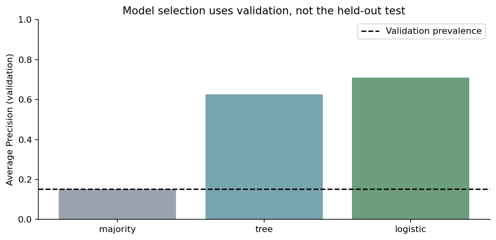
Fig. 106 شکل ۷ـ۱۶. مقایسهٔ Average Precision در اعتبارسنجی. برتری در همین دادهٔ ساختگی دلیل برتری همیشگی یک الگوریتم نیست و نباید به دادهٔ واقعی تعمیم داده شود.#
با قرارداد هزینهٔ FN=8 و FP=1، آستانهٔ انتخابشده روی اعتبارسنجی ۰٫۰۵ شد. سپس مدل بدون تنظیمِ مجدد روی آزمون گروهی اجرا شد. در آزمون، نتایج عبارتاند از TP=19، FP=52، FN=1، TN=108، Recall برابر ۰٫۹۵، Precision حدود ۰٫۲۶۸، Accuracy حدود ۰٫۷۰۶، Average Precision حدود ۰٫۸۶۸ و ROC AUC حدود ۰٫۹۴۹. این اعداد تنها برای همان داده و همان بذر و همان مدل هستند؛ نه ادعای کارایی روی تراکنشهای دنیای واقعی.
آستانهٔ پایین بهطور عمدی هشدارهای کاذب بیشتری تولید میکند تا موارد مثبت کمتری از دست بروند. برای همین، گزارش «Accuracy حدود ۷۱٪» بدون ذکر Recall و هزینه، بخش مهمی از داستان را حذف میکند. در این مثال نرخ پایهٔ مثبت در آزمون حدود ۱۱٫۱۱٪ بوده است؛ AP بالا را در کنار همین نرخ پایه معنا میکنیم. نکتهٔ پژوهشی مهم: هزینهٔ آستانهٔ انتخابیِ ۰٫۰۵ در آزمون برابر \(8\times1+52=60\) واحد است؛ درحالیکه آستانهٔ قراردادیِ ۰٫۵ روی همان آزمون هزینهٔ ۵۱ واحد داشت. بنابراین آستانهای که روی اعتبارسنجی کمهزینهتر بود، لزوماً روی آزمون مستقل کمهزینهتر نیست. نباید اکنون با دیدن آزمون، آستانه را مجدداً انتخاب کنیم؛ این اختلاف، شاهدی آموزشی دربارهٔ تغییرپذیری نمونه و خطر تنظیمکردن بر اساس آزمون است.

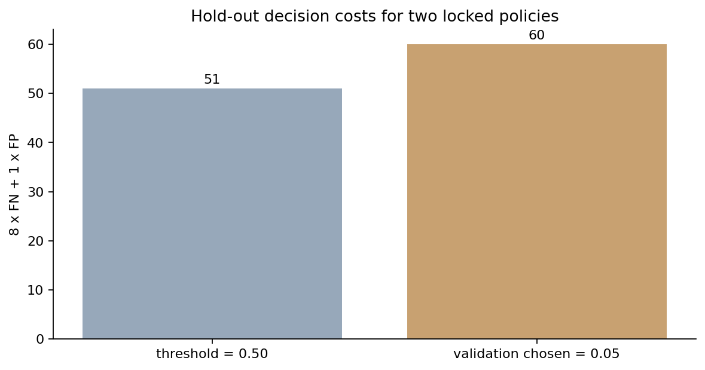
Fig. 107 شکل ۷ـ۱۷. مقایسهٔ هزینهٔ دو سیاست آستانهای روی آزمونِ کنارگذاشتهشده؛ هر دو آستانه پیش از دیدن برچسب آزمون تعیین شدهاند. اختلاف هزینه خاص همین مثال ساختگی است.#
۷ـ۱۵ـ۱. چرا اجرای چندبارهٔ Notebook ارزش دارد؟#
با ثابتبودن بذر، نسخهٔ داده و نسخهٔ کتابخانهها، اعداد باید در محدودهٔ دقت عددی بازتولید شوند. اگر نسخهٔ کتابخانهٔ علمی تغییر کرد، لازم است همان نسخه و اختلاف عددی مستند شود. اگر هدف، تعمیم علمی است، تکرار روی بذرها و مجموعههای مستقل مهمتر از افزایش تعداد رقمهای اعشار یک آزمایش واحد است.
۷ـ۱۵ـ۲. چرا آزمونِ خوب هنوز کافی نیست؟#
ساختکنندهٔ دادهٔ مصنوعی خودمان احتمال مثبت را از ترکیب مبلغ، دستگاه، تلاش ناموفق و سابقهٔ هشدار میسازد. طبیعی است که مدل لجستیک در چنین جهانی بتواند بخشی از قاعدهٔ تولید را بیاموزد. همین نتیجه روی دادهٔ واقعی با برچسب ناقص، تغییر رفتار مشتری و هزینههای متغیر ممکن است کاملاً متفاوت باشد. بنابراین مثالِ موفق یک آموزشِ روش است، نه اعتبارسنجی کاربردی.
۷ـ۱۶. نشت اطلاعات: خطایی که بدون استثنا باید جدی گرفت#
نشت اطلاعات (Data Leakage) رخ میدهد وقتی در آموزش یا انتخاب مدل از اطلاعاتی استفاده کنیم که در زمان پیشبینی در دسترس نبود یا متعلق به مجموعهٔ آزمون است. نمونههای خطرناک عبارتاند از: استانداردسازی روی تمام جدول پیش از تقسیم، انتخاب ویژگی با استفاده از برچسب همهٔ رخدادها، وجود رخدادهای یک مشتری در هر دو بخش، و استفاده از وضعیت نهاییِ بررسی بهعنوان ورودیِ پیشبینی اولیه.

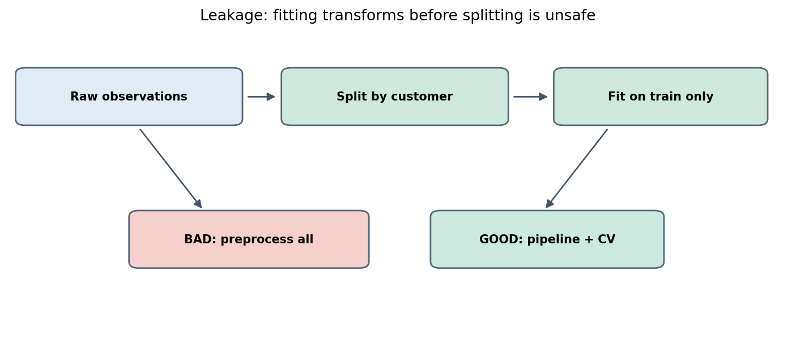
Fig. 108 شکل ۷ـ۱۸. سمت غلط: پیشپردازشِ قابلبرازش پیش از تقسیم داده. سمت درست: جداسازی ابتدا و برازش تبدیلها در Pipeline و فقط روی آموزش.#
نمونهٔ دستی: اگر میانگین مبلغ در صد رخدادِ آموزش ۴۰۰ و در بیست رخدادِ آزمون ۱۰۰۰ باشد، استانداردسازی بر اساس میانگین همهٔ ۱۲۰ رخداد از اطلاعات توزیع آزمون استفاده کرده است. حتی بدون برچسب، این کار ارزیابی سناریوی «آزمون واقعاً دیدهنشده» را تغییر میدهد. اگر سناریوی کاربرد عمداً یادگیریِ بدوننظارت از دادهٔ جدید را مجاز بداند، آن باید پروتکلی جداگانه و از پیش اعلامشده باشد.
۷ـ۱۷. قواعد حاصل از طبقهبندی در برابر قواعد پرتکرار#
پل جالب این فصل به فصل پنجم، طبقهبندی مبتنی بر قواعد و الگوها است. در قواعد انجمنی کلاسیک، همهٔ اقلام میتوانند در مقدم و تالی حضور داشته باشند؛ اما در یک قاعدهٔ طبقهبندی، نتیجه معمولاً برچسب هدف است. مثلاً new_device=1 AND failed_attempts>=2 -> fraud_flag=1 یک نامزد قاعدهٔ طبقهبندی است. احتمال شرطیِ آن در ده سطر میتواند بالا باشد، اما ممکن است همین قاعده در دادهٔ آینده یا گروه مشتری تازه کیفیت کمتری داشته باشد.
برای اینکه یک قاعده به الگوریتم عملی تبدیل شود، باید ترتیب اعمال چند قاعده، حالت تعارض، قاعدهٔ پیشفرض و مجموعهٔ آزمونِ مستقل مشخص شوند. این تفاوت نشان میدهد چرا Support و Confidenceِ قواعد انجمنی کافی نیستند تا کیفیت یک طبقهبند را ثابت کنند. روشهایی مانند Associative Classification در بخش ۷٫۴ کتاب Han نیز همین پیوند را روشن میکنند، ولی الگوریتمهای بسیار تخصصی را در این فصل وارد نمیکنیم.
۷ـ۱۸. چگونه نتیجه را قابل ممیزی گزارش کنیم؟#
یک گزارش خوب باید دستکم شامل این اطلاعات باشد: تعریف واحد نمونه و برچسب؛ افق زمانی تصمیم؛ منبع و نسخهٔ داده؛ شمارش کلاسها در هر بخش؛ روش جداسازی گروهی یا زمانی؛ ویژگیهایی که در زمان پیشبینی واقعاً در دسترساند؛ مدل و ابرپارامترها؛ انتخاب آستانه و هزینهها؛ ماتریس درهمریختگی؛ ROC AUC و AP همراه نرخ پایه؛ و محدودیتهای اصلی. اگر چند گروه جمعیتی، فروشگاه یا بازهٔ زمانی دارید، نتایج آنها جداگانه بررسی شوند؛ میانگین کلی ممکن است تفاوتهای بزرگ را پنهان کند.
عدم قطعیت نیز باید متناسب با واحد استقلال محاسبه شود. اگر رخدادهای مشتریان با یکدیگر مرتبطاند، بوتاسترپِ سادهٔ ردیفهای رخداد معمولاً توصیف دقیقی از عدم قطعیت نیست؛ نمونهگیری مجددِ مشتریها و نگهداشتن همهٔ رخدادهایشان مناسبتر است. بااینحال، بوتاسترپ بهخودیخود تغییر توزیع میان زمانها را حل نمیکند.
۷ـ۱۹. آزمون انتخاب روش و محدودیتهای ادعا#
برای مقایسهٔ دو مدل، ابتدا معیار از پیش انتخابشده و قرارداد تصمیم را تثبیت کنید. روی یک آزمون مشترک بهتر است اختلاف عملکرد بهشکل جفتی اندازهگیری شود تا تغییر نمونهها با اختلاف مدل اشتباه نشود. در دادهٔ کم، فاصلهٔ اطمینان اغلب گسترده است؛ «مدل A عدد بزرگتری دارد» الزاماً به معنی «A بهطور قابلاتکا بهتر است» نیست. اگر دهها مدل و آستانه را آزمایش کنیم و فقط بهترین عدد را منتشر کنیم، خطر انتخابِ برندهٔ تصادفی بالا میرود.
طبقهبندی صرفاً یکی از ابزارهای دادهکاوی است. وقتی برچسب قابلاعتماد نداریم، کشف ناهنجاریِ بدوننظارت یا خوشهبندی ممکن است پرسش مناسبتری باشد؛ اما جایگزینکردن خودکار آنها بهجای ارزیابی برچسبدار هم درست نیست. نخست پرسش را تعریف میکنیم، سپس خانوادهٔ ابزار را انتخاب میکنیم.
۷ـ۲۰. تمرینهای مفهومی، عددی و برنامهنویسی#
مفهومی
در مثال فروشگاه، «واحد پیشبینی»، «واحد استقلال برای ارزیابی» و «واحد هزینه» را جدا تعریف کنید. آیا همیشه یکیاند؟
چرا قاعدهٔ انجمنی با Confidence بالا الزاماً یک طبقهبند خوب نیست؟ با یک مثال کوچک توضیح دهید.
دو ویژگی مثال بزنید که در زمان آموزش موجودند اما در لحظهٔ تصمیم واقعی موجود نیستند.
توضیح دهید چرا خروجی احتمالِ بدون کالیبراسیون نباید مستقیماً بهصورت «نرخ واقعی خطر» تعبیر شود.
تفاوت دو گزارهٔ «مدل رتبهبندی خوبی دارد» و «مدل هشدارهای دقیق میدهد» چیست؟
در چه شرایطی گروهبندی بر اساس مشتری کافی نیست و تقسیم زمانی نیز لازم است؟
چه زمانی Precision مهمتر از Recall میشود و چه زمانی عکس آن صادق است؟ فرض هزینهای خود را بیان کنید.
اگر برچسبهای مثبت با تأخیر ثبت شوند، گزارش عملکرد یک ماه اخیر چه خطری دارد؟
محاسبات دستی
Gini و آنتروپی گرهٔ ریشهٔ دهسطره را محاسبه کنید.
برای تقسیم
new_device، وزن هر شاخه و مقدار Gini بعد از تقسیم را مرحلهبهمرحله به دست آورید.چرا Information Gain برابر حدود ۰٫۲۷۸ است؟ محاسبات لگاریتمی را بنویسید.
با هموارسازی لاپلاس، مقدار \(P(Y=1\mid new=1,failed\_high=1)\) را برای ده سطر محاسبه کنید.
برای ماتریس \(TP=12,FP=18,FN=8,TN=162\)، Accuracy، Precision، Recall، Specificity، F1 و Balanced Accuracy را به دست آورید.
با هزینهٔ منفی کاذب ۸ و مثبت کاذب ۱، هزینهٔ سه تصمیم «مدل»، «همیشه عادی» و «همیشه هشدار» را مقایسه کنید.
با فرض احتمال کالیبره و هزینههای ثابت، آستانهٔ نظری را از مقایسهٔ امید هزینهٔ دو تصمیم استنتاج کنید.
فاصلهٔ خام و مقیاسبندیشدهٔ نمونههای بخش kNN را محاسبه و تغییر همسایهٔ نزدیک را توضیح دهید.
کدنویسی و پژوهش کوچک
در
chapter07_examples.pyمقدارmax_depthرا از ۳ به ۱ و ۵ تغییر دهید؛ اعتبارسنجی را گزارش کنید، نه آزمون را.نسبت هزینهها را از ۸:۱ به ۲:۱ تغییر دهید و نشان دهید آستانهٔ انتخابشده چگونه جابهجا میشود.
GroupShuffleSplitرا بهصورت آزمایشی با تقسیم تصادفی سطرها مقایسه کنید. نتیجه را «خطر نشت» تحلیل کنید، نه تضمین افزایش عملکرد.با
StratifiedGroupKFoldچهار fold بسازید و تعداد مشتری و نمونهٔ مثبت هر fold را بشمارید.Precision، Recall و هزینه را در ۱۹ آستانه رسم کنید. کدام آستانه برای قرارداد هزینهٔ خودتان مناسب است؟
برای ارزیابی عدم قطعیت، ۲۰۰ بار مشتریان آزمون را با جایگذاری نمونهگیری کنید؛ توزیع Recall را گزارش کنید و شرط داشتن کلاس مثبت را کنترل کنید.
برنامهای بنویسید که پیش از آموزش، حضور ویژگیهایی مانند
final_review_outcomeرا در جدول ورودی ممنوع کند و آزمون واحد بسازید.یک مدل Baseline دیگر بسازید که فقط بر اساس نرخ پایهٔ آموزش احتمال ثابت بدهد. Brier و AP آن را کنار مدلها گزارش کنید.
با دادهٔ ساختگی، شرایطی بسازید که ROC AUC تغییر چندانی نکند ولی Precision در آستانهٔ انتخابی کاهش یابد. نقش تغییر نرخ پایه را توضیح دهید.
یک گزارش دوصفحهای بنویسید که در آن نتیجهٔ مدل، محدودیتهای ساختگیبودن داده و خطرهای اجرایی از هم جدا باشند.
۷ـ۲۱. جمعبندی و پل به فصل هشتم#
در این فصل یاد گرفتیم که طبقهبندی فقط اجرای یک تابع پیشبینی نیست. تعریف برچسب، زمان دردسترسبودن ویژگیها، انتخاب معیار، هزینهٔ تصمیم، جداسازی صحیح گروهها و اعتبار آزمون همگی بخشی از روش علمیاند. یک درخت کوچک میتواند قابلتوضیح باشد اما بیشبرازش کند؛ بیز ساده سریع است ولی فرض استقلال دارد؛ kNN از هندسهٔ بازنمایی اثر میگیرد؛ لجستیک احتمال تولید میکند، اما آستانه و کالیبراسیون همچنان مسئلهاند. هیچکدام بدون ارزیابی مستقل، صرفاً به دلیل پیچیدگی یا سادگی، برنده نیستند.
فصل هشتم: خوشهبندی و مبانی تحلیل خوشهای. در آن فصل برچسب پاسخ را کنار میگذاریم و میپرسیم: وقتی تنها داده و معیار فاصله داریم، «گروه طبیعی» یعنی چه، و چگونه میان ساختار واقعی، اثر مقیاس و خوشهٔ تحمیلی فرق میگذاریم؟ این انتقال، تفاوت بنیادین یادگیری نظارتشده و کشف ساختار را روشن میکند.
۷ـ۲۲. منابع و یادداشت بازتولید#
Han, J., Pei, J., & Tong, H. Data Mining: Concepts and Techniques, 4th ed., Elsevier, 2023, Chapter 6, Sections 6.1–6.7, printed pp. 239–302; for associative classification, Chapter 7, Section 7.4.
Tan, P.-N., Steinbach, M., Karpatne, A., & Kumar, V. Introduction to Data Mining, 2nd ed., Pearson, 2019, Chapter 3, Sections 3.1–3.9, printed pp. 113–175; Chapter 4, Sections 4.2–4.6, printed pp. 195–248.
فایلهای تألیفی این فصل (تمام فایلها مستقل و آموزشیاند و از تصاویر کتابها بازنشر نشده است):
chapter07_examples.pyوchapter07_examples.ipynb؛fraud_events_synthetic.csvوexample_results.json؛test_chapter07_examples.pyو ۱۸ شکل اختصاصی.
راهنمای اجرا: در پوشهٔ دانلودها python -m pip install -r requirements.txt و سپس python chapter07_examples.py اجرا شود. برای آزمونها python -m unittest -v test_chapter07_examples.py و برای Notebook، سلولها به ترتیب اجرا شوند. اگر به فضای مجازی Python دسترسی ندارید، همچنان مثالهای دستی بدون اجرای برنامه قابل تدریساند. اعداد بخش آزمایش با محیط علمی بسته کنترل شدهاند؛ نتیجهٔ انتشار سایت پس از Commit و Push باید جدا تأیید شود.